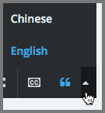

10. Watching Videos on the edX Video Player#
All edX courses include videos, and edX has its own video player. Most of the controls on the player will be familiar to you if you have watched online videos before. However, the edX video player has some extra features you may not have seen.
The following image shows the video player in the middle of a video, followed by an explanation of each option or control on the video player.
Note
The illustration that follows shows the video player for a video that has all of the possible features available. Only the controls that apply to a specific video will actually be present when you use the video player in a course.
{kind=link}
Play/pause: You can play the video by selecting this control. Select this control again to pause the video.
Time: The first number indicates the length of time the video has already played. The second number indicates the total length of the video.
Playback bar: You can go to a different point in the video by selecting and dragging this control or by using the left and right arrow keys.
Speed: If you want the video to play faster or slower, you can select different speeds using this control.
Volume: You can use this control to change the volume of the video.
HD: You can play the video in high-definition visual resolution by selecting this option if HD quality is available for the video. This option works best if you have a fast Internet connection. Select this control again to play the video in standard resolution.
Full screen: You can expand the video to fill your browser window by selecting this control. To return to default mode, press ESC on your keyboard or select this control again.
Show or hide closed captioning: You can show an overlaid transcript of the audio portion of the file by selecting this control. If you show the captions, you can move them to different areas on the video screen by dragging and dropping them. To hide the captions, select this control again.
Note
In some cases, two sets of captions can appear when you select CC. This situation can occur if YouTube is the host service for the video and your YouTube account settings for playback are set to always show captions. As a result, YouTube and your course might both provide captions for the video. To correct this problem, select CC again or change your YouTube account setting.
Show transcript: You can show a complete, scrolling transcript of the audio portion of the file to the right of the video by selecting this control. Many course teams set video transcripts to play by default when your video starts. Select this control again to hide the transcript.
Language menu: You can select a different language for the closed captions and the transcript with this control if translations are available.
Download video: You can download the video to watch later with this option (if available for the video).
Download transcript: You can download the video’s transcript as a SubRip (.srt) file or as a text (.txt) file. You can open files of either type in a text editor such as Notepad.
Handouts: You can download any handouts that the course team has associated with the video.
License or Copyright: If the course team reserves rights or specifies a Creative Commons license for the video that is different from the course-wide license, that information appears below the video player. For Creative Commons licenses, you can select the license to open a web site with more information about your rights.
For more information, see Understanding How Courses and Videos Are Licensed.
Transcript: You can scroll through the transcript and select any line to go to that point in the video.
{kind=link}
For a demonstration of the edX video player, see Videos on edX in the edX DemoX course.